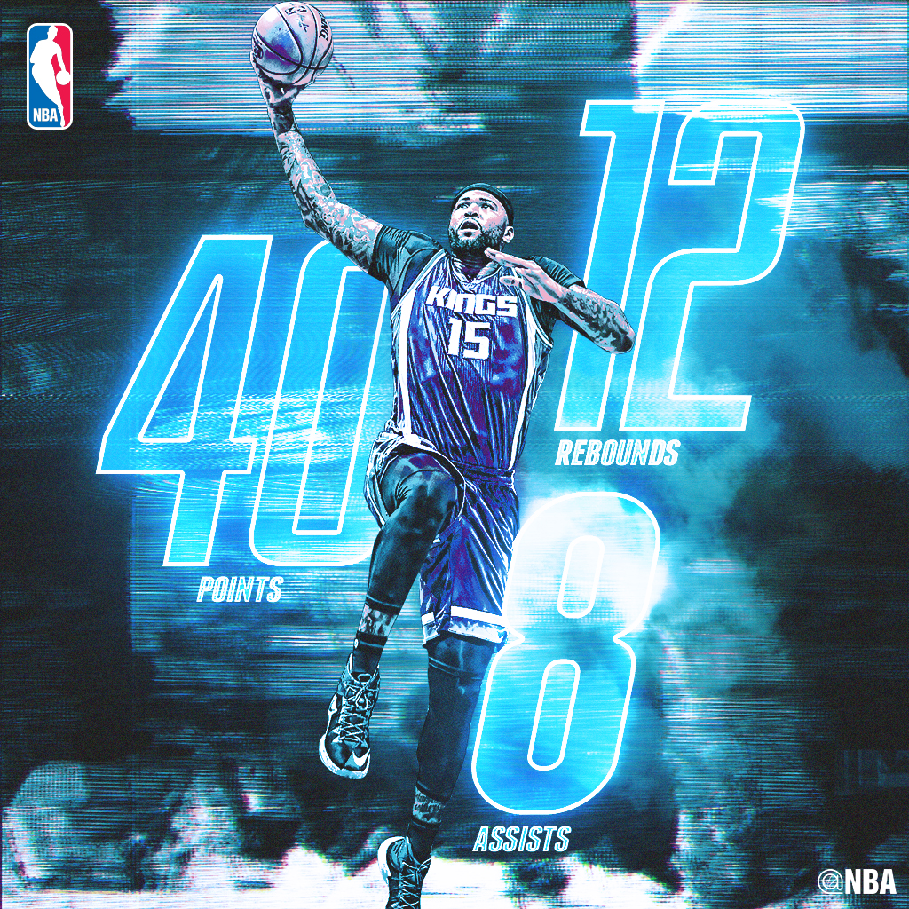
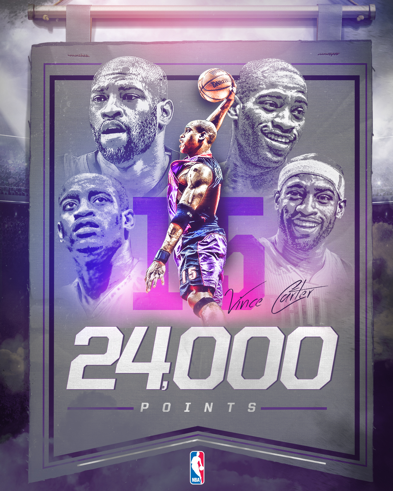
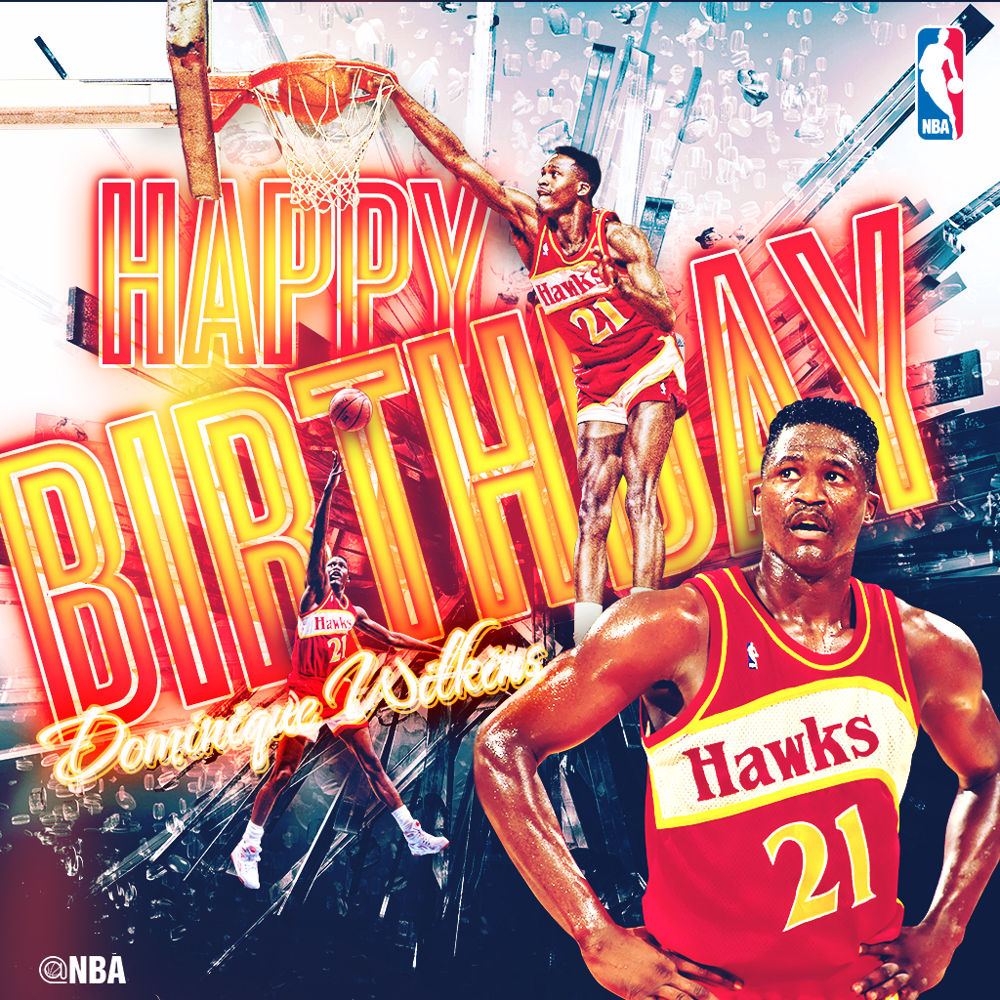

Short Bio
Mekale Jackson is a creative design leader with a proven record of ideating marketing and creativesolutions for some of the country's most iconic sports brands. When's he's not in the office working full-time overseeing St. John's Athletics award-winning creative services and digital media departments, he moonlights as a respected, self-taught, freelance graphic designer who's client base includes the NBA, Bleacher Report, Phoenix Suns, Under Armour, University of Michigan, Northwestern University and several other sport entities
An entrepreneurial mindset
I was born and raised on the east side of Detroit, spent my high school years on the west side and matriculated through the Detroit Public School system before going on to the University of Michigan. I'm the second oldest of 7 kids. My parents raised us with the mindset of working for what you want. If we wanted a raise in our allowance, we had to put together a proposal on why we wanted it and a proposed budget for what the new money would go towards. My dad always wanted us to have an entrepreneurial mindset by thinking about all the worst case scenarios and planning for it by never settling for just being good enough.
How did you first get interested in design?
I didn't know Photoshop existed until 2004 during my junior year of college. I was at my fraternity house (Alpha Phi Alpha) and one of my bruhs was creating a flyer for one of our events. I sat and watched him in awe and I asked him how he created it. He told me the program he used, and I asked him if he could install the program on my laptop. The next day, I took out a line of credit at Dell computer, and purchased a laptop for $473. It was probably the best investment I've ever made. Without any formal training, or Youtube (since Youtube wasn't actually invented until 2005), I fired up photoshop and just began playing around in the program, learning by trial and error.
Tell me about the work you've done?
For the past 10 years, I've been at St. John's University in various roles in the athletic department. I currently oversee Creative and Digital strategy, serving as the Creative Director and brand steward for the department. While at St. John's , I've spearheaded and designed several marketing and creative campaigns that is featured prominently around New York in places like, Times Square, Madison Square Garden, Barclays Center, Penn Station and is also a fixture on buses, subways, commercials or any other traditional media platform. A lot of the work has won several industry awards.
When I'm not working my "9-5" (what job in sports is really a 9-5?). I'm working 9p-2a as a freelance designer/creative consultant for other sports brands. I've worked on things with the NBA (NBA Draft, Finals, All-Star game, etc), Bleacher Report, University of Michigan, Northwestern, Under Armour and the Phoenix Suns, just to name a few.
A cool story: I once was asked to create a "Happy Birthday" Jim Harbaugh graphic for Michigan, with the hopes of Jim Harbaugh accepting the then-vacant Michigan Football coaching job. Well….needless to say, the graphic was posted on Michigan's social platforms, shown across ESPN networks and shortly thereafter, Jim Harbaugh became the coach. Now I'm not saying I had anything to do with his hiring … but these days, recruits are committing to schools largely based on your digital and social media brand. Why wouldnt his hiring be any different? I'm just sayin. lol
What are your proudest accomplishments of your career?
My proudest accomplishments are Ryan, Mone and Jeff. These are people who worked under me at some point in my career whom I either taught how to design from scratch, taught the art of design or helped someone enhance his skills as a designer. All of these people are in the creative field working full-time as designers, editors or digital strategists in the NCAA, MLB and NYRA. Having the opportunity to develop someone professionally is nothing to be taken lightly. A poster comes and goes. But that one person who you've impacted, makes a mark in their life that can never be erased. I'm proud of the fact they they trusted me to have an influence in their lives so that they can make a living doing what it is I'm making a living doing.
What have been your biggest struggles of your career?
There isn't a set career path in sports design. It's not like an agency where you can climb up from being a Jr. Designer to Creative Director. For a while, I grew frustrated because I didn't know where my career was going to take me because that "next step" wasn't as clear. But I knew I wasn't going to wait for the industry to change, I was going to prove that change was needed and provide a service that filled a void. Which is why I started freelancing. Freelancing not only push me as a designer, but it allows me to see how other leagues, departments and brands were communicating, prioritizing and what they were thinking about for the future. Many of those same experiences and strategies that I gain in what I do late nights from 9pm-2am, carries over to what I do from 9am-5pm. Because of that, I have a heads up on what we could be doing better as a department to keep us as the creative leaders in the BIG EAST conference.
What are you doing that's special that sets you apart from your careers.
I understand the value of time and the importance of prioritizing. We all get the same 24 hours in a day. I use mines differently than most. I have two kids, a wife, a full-time job in sports and I freelance almost full-time hours. Plus, I still have time to play NBA 2K. You make time for things that are important to you.
What have your experience been as a person of color in the design industry.
Well, there aren't many of us in the industry … especially in sports. Knowing that, I understand I represent a small percentage of black administrators in division 1 athletics. Whenever there is an opportunity to talk about diversity and inclusion, I try to be the first to speak up.
What would you like to see changed about the design field?
I would love to see more diversity in the design field. I would love to see more designers like myself being recognized. I want young black designers to see this industry as a viable career path and become inspired by those like them.
What do you love most about working in design?
I love the fact that, as a fan, I would be looking at sports graphics on social media while watching a game. To be able to actually create the creative material that I would be consuming regardless, is something that I love.
How can design be more accommodating to underrepresented populations of people.
Design and the Arts needs to be taught in middle schools in the inner cities. I think it's just as important as a science or math class. Kids need to be able to express themselves through art because in art, there is never a wrong answer. Merely a different interpretation.

What are you working on right now, either for work or for yourself?
At the time of this post, I'm working on creative for NBA All-Star Weekend, Major League Lacrosse materials and also prepping for the St. John's vs. Georgetown game at Madison Square Garden.
What advice would you give to folks from similar backgrounds who are in design or hoping to get into it?
Keep working. If it's something you really want to do, do it. Start designing after work, late nights. Whatever you get your hands on. Just start designing. No one is stopping you.